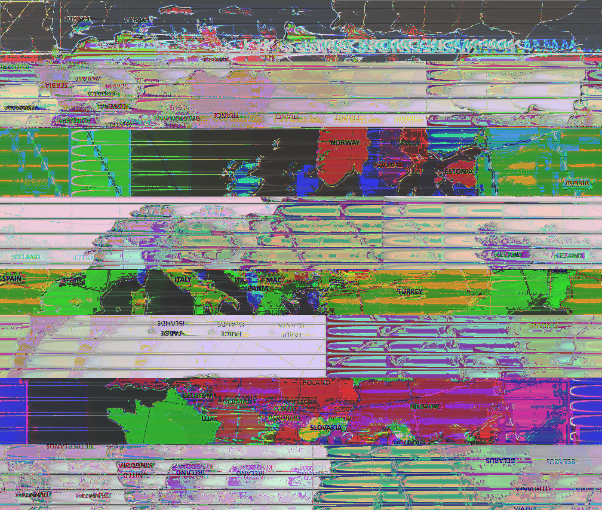
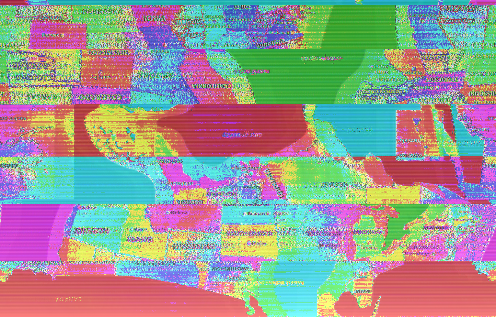

A collection of glitched maps created by Phazer. She wanted to experiment to see how our maps would look if they experienced a continental shift in glitches. Not only physically, but politically and cultuerally.